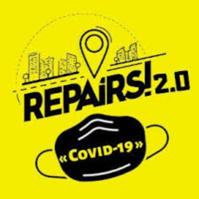
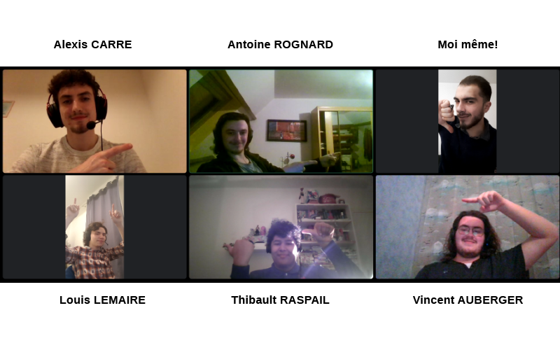

Bien qu'il n'aient pas été présents sur certains points, je ne peux que remercier mes parents de m'avoir inculqué une très grande partie du savoir et de la culture dont je dispose actuellement et de m'encourager dans la poursuite de mes études. Ils m'ont en partie permis d'être ce que je suis aujourd'hui, et je leur en serais éternellement redevable.
Comme expliqué précédemment, en plus de me fournir des cours et un soutien de qualité en code, Michel m'a beaucoup aidé pour la création de ce site et de mes différents projet Tech. De plus, j'ai la chance de pouvoir le considérer comme un ami, un conseiller qui m'est aujourd'hui indispensable.
Odile a su me soutenir de l'idéation de mon entreprise jusqu'à aujourd'hui, et elle continue toujours à me guider et fournir des précieuses ressources et savoirs pour la création et la gestion de mon entreprise! Ici aussi, j'ai la chance d'avoir rencontrée une personne formidable, qui aime son secteur et son métier, et dont les conseils me sont tout autant indispensables que ceux de Michel.
Monsieurs Dacquet, Grosjean, Champagne et madame Lochu m'ont permis d'approfondir mon attrait pour la Tech et le Design grâce à leurs enseignements de qualité et à leurs personnalités sympathiques! Ils sont d'excellents professeurs et savent me motiver pour me surpasser durant chacun des projets qu'ils me confient.
Je ne pourrais jamais assez remercier la direction et les membres du staff de l'école, notamment madame Vlaeminck qui m'a rassuré sur la poursuite de mes études, qui me permettent de me sentir en confiance, presque en famille, au sein de l'école. Cet environnement est évidemment très encourageant pour continuer mes études de manière sereine.
Bien que nous n'ayons commencé que très récémment tous ensemble, je me dois de remercier les membres de l'équipe de phoning de l'école, et surtout Juliette, qui me permet de monter en compétences et d'obtenir des revenus complémentaires nécessaires à ma situation, en plus d'être très sympathique! C'est également un plaisir de pouvoir collaborer avec Karim et Julia, toujours aussi brillants et agréables.
Grâce à Repairs!, j'ai pu: me former en droit, en communication et en gestion, rencontrer des amis et pairs incroyables, trouver un logement, bénéficier d'une aide ponctuelle pour trouver celui-c, organiser et participer à des conférences et interviews... J'espère, grâce à mon expérience et ma bonne volonté, pouvoir leur rendre la pareil dès que ça sera possible, je ne pourrais jamais assez les remercier pour tout ce qu'ils ont fait pour moi.
Ils sont essentiels au développement de mon projet, mes meilleurs amis au sein de l'école, (je trouve!) de vrais génies, et j'espère pouvoir accomplir de grandes choses avec eux. Je les remercie du fond du coeur pour l'investissement personnel et le temps qu'ils consacrent à notre projet, ça vaut tout l'or du monde.
